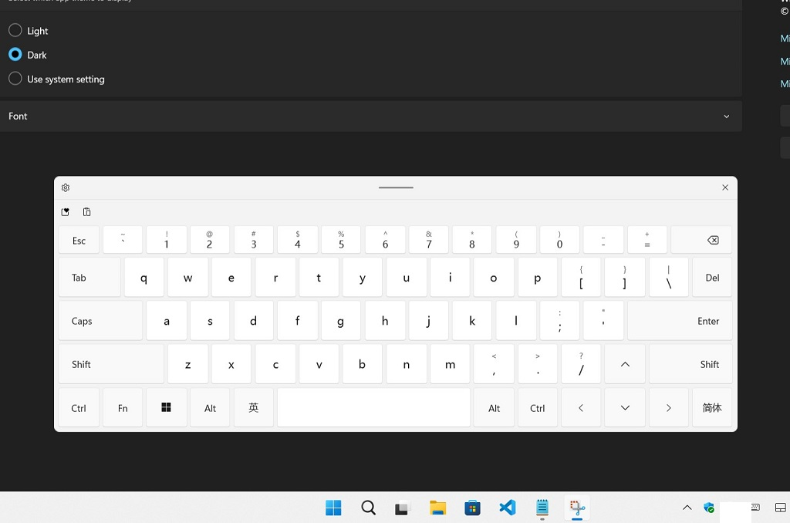

1. Background
In Windows 11, Microsoft redesigned the virtual keyboard and changed the default behavior. According to the test, there is a definite condition that affects the behavior of the virtual keyboard:
Whether the physical size of the screen is less than 18 inches, less than 18 inches can use docking mode, >=18 inches screens can only use undocking mode;
Docking + Full Layout Keyboard (<18 Inches Screen)

Undocking + Full Layout Keyboard (>=18 Inches Screen)

Undocking + Small Layout Keyboard (<18 Inches screen, no more layout available)
They have their own advantages and disadvantages:
- In undocking mode, most programs do not automatically adjust the position of the input area, so the touch keyboard may cover the input area, but you can freely drag the virtual keyboard to avoid the input area; while in docking mode, the input area of most programs can be automatically adjusted, avoiding the touch keyboard cover the input area.
- while in docking mode, popping up the touch keyboard will cause a change in the application window size and some applications will be interfered with. However, undocking mode will not change the window size or position of the applications.
- Devices under 18 inches can only use the Small layout in undocking mode, which is terrible (Windows 11 22H2)!
- Docking mode is not available for devices over 18 inches!
So, in order to use split mode + full keyboard layout on Surface Go, We should try to let Windows 11 believe the screen diagonal of the Surface Go is above 18 inches!
Tip: For Windows 10:
Windows 10 also uses the physical screen size information provided in EDID to adjust the size of the touch keyboard, Windows 10 touch keyboard resizing feature can be achieved by adjusting the screen size information in EDID.2. Guessing where Windows gets the screen dimensions from
You can run this command in PowerShell to see the physical size of the screen, the returned value is in centimeters (cm):
Get-WmiObject -Namespace root\wmi -Class WmiMonitorBasicDisplayParams | select InstanceName,MaxHorizontalImageSize,MaxVerticalImageSize
A possible source of this information is the EDID data read from the display, in the EDID 1.4 specification there is a special field for the physical size of the screen, the screen dimensions are usually stored in the Basic Display Info and PTM blocks of EDID Block 0, But Windows is likely to recognize the physical size of the screen only through the Basic Display Info block.
3. How to modify EDID ?
You can find a variety of EDID editors on the Internet that support the EDID 1.4 specification, and editing these data is easy, But how do we get Windows to use our modified EDID data??
Luckily, you don't need any third-party programs or drivers to achieve this:
Windows provides the EDID Override mechanism,
Link: Microsoft docs - Manufacturer override of monitor EDIDs
So, We just need to write the modified EDID Block 0 information to "0" in the following path (0 means override EDID Base Block), value type is "REG_BINARY", length is 128 bytes.
HKEY_LOCAL_MACHINE\SYSTEM\CurrentControlSet\Enum\DISPLAY\%MONITOR_INSTANCE_PATH%\Device Parameters\EDID_OVERRIDE
I attempted to change the screen size information at 0x15, 0x16 using the EDID editor, and override the default EDID with the EDID_Override registry key. After reboot, Eventually I can use the touch keyboard in undocking mode with full layout on the Surface Go!
I also tested on an external monitor (24 inches), and managed to make Windows think that the external monitor was only 17 inches, so that I could use the touch keyboard in docking mode.
4. It's not a perfect solution
Since we modified the EDID information so Windows detects an unrealistic screen dimension, you will face some awkward scenarios:
- Some applications that use the physical size of the screen to accurately display the size of an object ( although relatively rarely ) will get an incorrect screen size.
- The UI elements such as icons and text may be too large or too small in areas such as the login screen that are not affected by the user's Hi-DPI scaling settings.
- Only one mode can be used: for example, after resizing the screen to 18 inches, you will not be able to dock the virtual keyboard to the bottom of the screen unless you delete the EDID Override setting, but this requires a reboot of the device to take effect.
Even so, I still prefer to use a non-docking traditional keyboard layout. Because for me, the Small layout, which is the only available layout in undocking mode by default, is an inefficient, poorly usable layout.
The best solution perhaps is to hope that Microsoft will remove this silly restriction in the future release, As a user, I know what I need, not what the UX designer thinks I need!
This program only supports modifying the screen size information field in EDID. Before importing the .reg file to your computer, please use Windows Notepad to open the registry file to check the contents and make sure there are no errors before importing it to your computer.
Notice of Use
You must be aware: the worst case of EDID OVERRIDE can cause your device to not work or even damage your computer, That's why we don't provide an "exe" file for you to easily modify this information with a single click. Before you use this program or even any EDID modification tool, You must have sufficient knowledge of the Registry Editor, Windows Device Manager, PowerShell and other essential system administrator knowledge, If you are not familiar with these tools, please seek help from a professional system administrator.
Note: Your computer OEM may overwrite the EDID OVERRIDE data, although this is rare, when it happens, you should be careful to check what changes the OEM has made to your monitor's EDID.
This application is not a professional EDID editor, although we try to avoid errors, you should be aware this program may still generate incorrect EDID data, and you are entirely responsible for any damage caused by using this program.
How to use this application
1. Export original EDID data to registry file.
First, disconnect all external monitors, then open PowerShell and run this:
Get-PnpDevice -Class "Monitor" -Status "OK" | ForEach-Object { $regfile=$([Environment]::GetFolderPath('Desktop') + "\" + $($_.Name) + '.reg'); Write-Host -NoNewline "Exporting $($regfile) : "; reg.exe export "$('HKLM\SYSTEM\CurrentControlSet\Enum\' + $($_.InstanceId) + '\Device Parameters')" "$regfile" /y}
You will see output like this:
Exporting C:\Users\%USER_NAME%\Desktop\Integrated Monitor.reg : The operation completed successfully.
Find this registry file, and use it in subsequent steps.
2. Check the current screen dimension information, and keep a record of it, so that you can check whether the changes are made successfully afterwards.
3. Import the registry file in the editor.
In the editor below, click Open Registry File, and select the exported registry file.The editor will automatically extract information about the physical dimension of this screen, the best resolution, the image size at the best resolution, etc.
You need to make sure this information is correct, especially the screen resolution, otherwise it will affect the calculated screen size, if this information is not correct, please switch to another EDID modification tool or submit an issue to us.
4. Set new screen size information
Enter your desired screen size, when diagonal length is >= 18 inches Windows 11 will force the touch keyboard undock, when length is <18 inches you can use dock mode.5. Download EDID Override registry file
The application will automatically calculate the new EDID data when you change the screen size parameters, and you can see which fields of the EDID we have changed in the hex viewer below.After setting the desired screen size, click the Download EDID Override Registry File button and the Remove EDID Override Registry File button to download the two .reg files.
- XXXX_EDID_OVERRIDE.reg is used to import the EDID data you set;
- XXXX_EDID_OVERRIDE_REMOVAL.reg file is used to remove the EDID Override setting.
6. Restart computer to apply settings
After importing the registry file, you need to restart your computer, after restarting, you may notice that the size of the Windows UI elements may have changed. This is fine, Windows seems to determine the level of Hi-DPI scaling based on screen size and resolution.Try to invoke the touch keyboard and check if it successfully changes its behavior.
Finally: typically you may need to readjust the scaling level in your Windows display settings, in this case, the recommended scaling level may no longer be helpful and you will need to set it to the level you feel suitable.
For example: Surface GO 2, the recommended scaling level before adjustment is 150%, after adjusting the screen size to 18 inches in EDID, the recommended scaling level is 125%, resulting in too small text size, which needs to be adjusted to 150% again.
Simple EDID Editor
It is recommended to use another EDID editor to change your EDID data.
In this situation, the EDID information we obtained may be inaccurate. If necessary, please manually remove the existing EDID Override data and restart your computer, then re-export the registry file.
Original EDID information of the display:
Device Instance Path:Screen physical dimension (Windows will use this info.): centimeter
PTM screen dimension: centimeter
Preferred Timing Mode resolution (If detected incorrectly, please change the resolution to the correct one or use another EDID editing tool):
Set the new screen dimension parameters:
Hex view
| 00 | 01 | 02 | 03 | 04 | 05 | 06 | 07 | 08 | 09 | 0A | 0B | 0C | 0D | 0E | 0F |
|---|
| 00 |
| 10 |
| 20 |
| 30 |
| 40 |
| 50 |
| 60 |
| 70 |